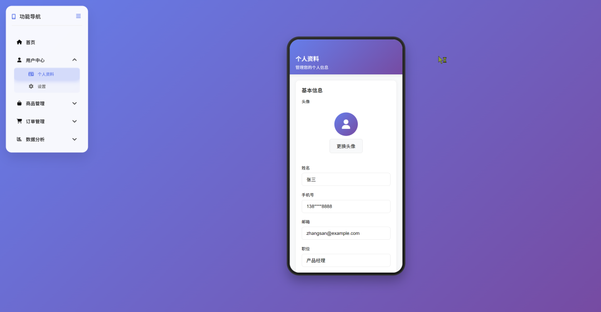

用 AI 把需求变成
可点击的产品原型
这一节从小程序移动端原型切入，讲清楚 Cursor、Codex 和 Skills 在原型设计里的分工：既要快，也要稳，还要能持续迭代。
原型设计的难点，已经不只是“画出来”
现在很多 AI 工具都能生成界面，但真正的产品原型要解决的是：需求是否讲清楚、交互是否能跑通、团队是否能理解、后续迭代是否不跑偏。
过去的痛点
- 画图快，改全局慢
- 页面像，但流程断
- 需求口径容易漂移
- 很难和真实开发衔接
AI 后的新机会
- 从需求直接生成页面
- 通过代码快速复用组件
- 用规则文件保持一致性
- 让原型更接近可交付 Demo
这节课的价值：把原型变成需求协作资产
学员真正要带走的，不是“会让 AI 生成几个页面”，而是学会把需求、规则、交互、数据和交付说明打包成一个可复用的工作流。
三种路线：Cursor、Codex、Skills
Cursor：基于项目包改原型
适合你已经有小程序、H5、后台项目包。AI 能读懂项目结构，直接改页面、组件和交互。
最适合本节实操Codex：从零做可运行原型
适合快速生成 HTML 原型、后台 Demo、课程展示页，边聊边改，迭代速度很快。
适合无代码包起步Skills：沉淀标准流程
把输入、规则、产出格式固定下来，让 AI 按同一套方法生成低保真、高保真和交付说明。
适合团队复用先从简单方法开始：Cursor + 提示词快速出原型
对于基础场景，最容易上手的方法是：把页面布局、导航、手机模拟器、核心页面和交互一次说清楚，让 Cursor 直接生成一个 HTML 单页原型。

提示词的价值：把“我要原型”拆成可执行任务
重系统原型，必须先有项目规则
如果每次都只让 AI “帮我改一下页面”，很容易改 A 功能时带歪 B 功能。真正可持续的做法，是把产品规则、UI 规则、交互规则、数据规则写进项目约束。
项目规则应该约束什么？
页面新增前，先判断属于哪个业务域；组件新增前，先查是否已有同类组件；交互改动前，确认入口、状态、空态、异常态和下一步路径。
这类规则可以放进 `AGENTS.md`、`.cursorrules`、`CLAUDE.md` 或单独的 prototype-rules 文档里。
不要只给 AI 提示词，还要给它规则系统
对于原型设计，规则系统通常由四类文档组成：项目规则、用户偏好规则、业务字典、验收清单。它们让 AI 知道什么能改、什么不能乱改、每次迭代要检查什么。
AGENTS.md项目规则
约束目录、组件、业务对象、交互状态和输出格式。
.cursorrules工具规则
给 Cursor 读取，约束代码风格、原型保真度和修改流程。
user-rules.md个人偏好
沉淀你对后台、小程序、课程页面的审美和交付要求。
checklist.md验收清单
每轮修改后检查页面、路径、状态、数据和边界条件。
低保真和高保真，不是审美差异，是阶段差异
低保真：先验证结构
适合早期讨论：页面有哪些、入口在哪里、主流程是否闭环。
高保真：再验证体验
适合评审和演示：品牌感、状态反馈、按钮层级、真实内容密度。
原型是需求传递的载体，不只是界面截图
一个好原型要让研发、设计、业务方都能看懂：用户从哪里来，要完成什么任务，系统给什么反馈，异常情况怎么处理。
用户路径
入口、关键操作、下一步去向。
交互状态
默认、加载、成功、失败、空态。
业务规则
权限、校验、额度、流程限制。
交付说明
页面清单、字段说明、验收点。
用 Codex 从零做原型的推荐流程
提示词：让 AI 先拆清楚，再动手
不要只说“帮我做一个原型”。要把项目拆分、保真度、导航层级、交互点和输出文件说清楚。
项目规则：保证两个原型讲的是同一个业务
小程序和后台分开做以后，最容易出现的问题是：端上叫“券包”，后台叫“优惠活动”；端上有“取餐码”，后台没有核销状态。规则文件就是用来避免这种口径漂移。
容易踩的坑：AI 原型不是越花越好
项目混在一起
小程序和后台放进同一页，看起来热闹，但不利于真实交付。
只有一级页面
没有二级功能，原型很像截图，不能展示真实流程。
高低保真混乱
早期过度追求视觉，反而掩盖结构问题。
规则没有沉淀
每次靠口头提醒，下一轮修改就容易失控。
原型最好能部署成一个链接
AI 原型的交付价值，不只是你电脑上能跑，而是业务方、设计、研发都能打开同一个版本，围绕同一个页面讨论。
本地预览
适合个人快速迭代。用 `localhost` 验证交互，不适合作为最终评审地址。
静态部署
HTML 原型可用 GitHub Pages、Vercel、Netlify 或内部静态服务托管。
小程序预览
小程序项目可用开发者工具生成预览码，适合移动端真实体验。
版本留痕
每轮评审保留版本号、变更点和待确认问题，避免口头共识丢失。
一个 AI 原型是否合格，看这 8 个点
| 检查项 | 要看什么 | 为什么重要 |
|---|---|---|
| 目标清楚 | 页面服务哪个用户任务 | 避免为了好看而堆界面 |
| 路径闭环 | 入口、操作、反馈、退出 | 能真实演示用户完成任务 |
| 状态完整 | 空态、异常态、成功态 | 研发评估时不会漏边界 |
| 规则一致 | 组件、颜色、命名、字段 | 多轮迭代不跑偏 |
| 数据可信 | 文案和字段像真实业务 | 评审时更容易做判断 |
| 端侧联动 | 小程序和后台能对应 | 看见完整业务链路 |
| 可部署 | 能打开、能分享、能回看 | 降低沟通成本 |
| 可继续改 | 代码结构和说明清晰 | 下一轮 AI 还能接着做 |
回顾重点：AI 原型设计有什么价值
第一，它能把需求更快变成可点击体验。
第二，它能通过规则文件保证长期一致性。
第三，它能同时支持低保真讨论和高保真评审。
第四，它能把小程序、后台和交付说明连成一个完整链路。
一句话带走
好的 AI 原型，不是一次生成，而是可约束、可评审、可继续迭代。